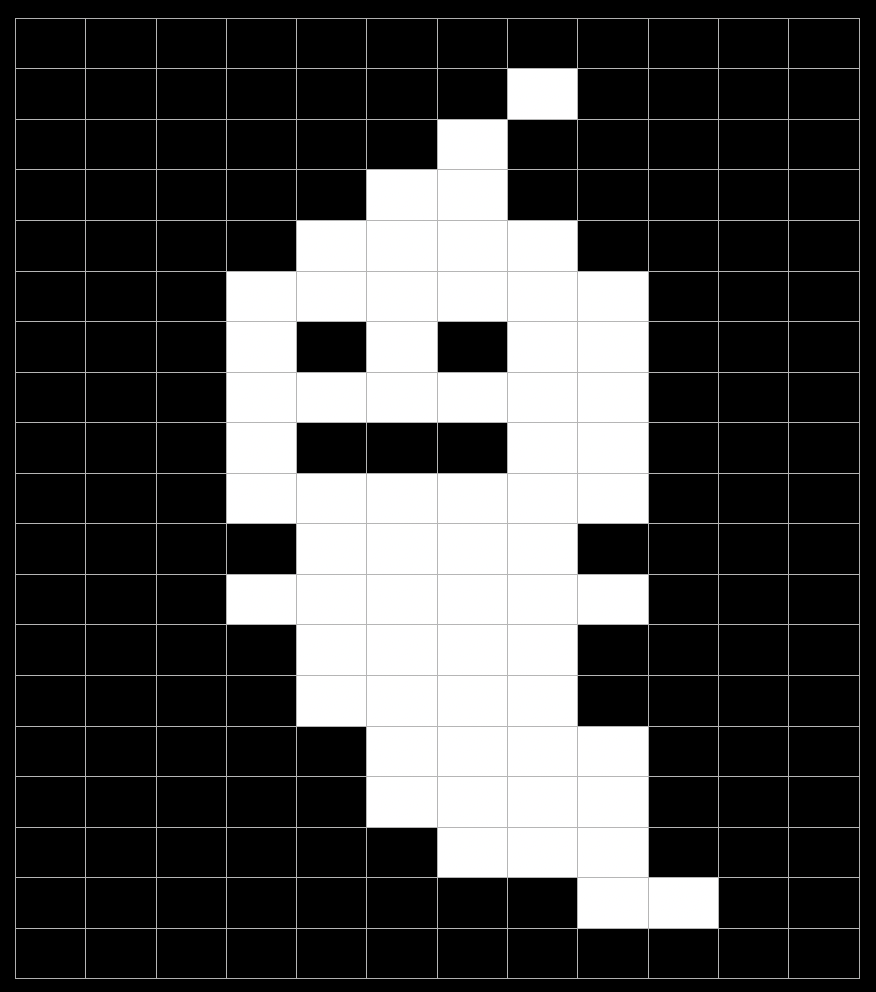

blueprint <- blueprint |>
a11ytables2::append_tables(
sheet_name = "table_1",
title = "Table 1: Widget quantity",
subtitle = "By geographic region in financial year 2025/26",
source = "The UK Widget Survey.",
tables = list(
"Table 1a: Widget quantity in the North" = table_1a,
"Table 1b: Widget quantity in the South" = table_1b
)
)
tl;dr
Reminiscing about two demo R packages that helped me investigate new interfaces for best-practice spreadsheet generation: {a11ytables2} and {yamlsheets}.
Recap
I wrote the {a11ytables} R package to help me (and UK government analysts in general) to generate publication-ready spreadsheets. The package helped users comply with best practice requirements without thinking too hard.
For me (and some other people) it was okay for the package to do all the heavy lifting, but there’s clearly a market for a more flexible set of functions that give more power to the user.
Fortunately, the package is now in better hands with the Office for National Statistics’s (ONS) Best Practice and Impact Team. They’ve also landed on the idea of a more expressive interface.
Dead ends
Amusingly, {a11ytables} started with a different kind of API where you could add_*() different types of sheet to build up a workbook1.
Later I returned to the idea of building a spreadsheet sheet-by-sheet and also noodled with the idea of using a configuration file. These investigations were only ever written up as demo packages that are now archived: {a11ytables2} and {yamlsheets}.
I first referred to the development of {a11ytables2} on an ill-fated bus journey and alluded to some earlier YAML-based fiddling, which served as the basis for {yamlsheets}.
I never properly introduced these packages. I expected that one or the other would eventually supersede or get integrated into the main {a11ytables} package.
Hahaha, nope.
I saw neither of these through to fruition, but they were a good initial stab at the type of thing I wanted to develop. So here’s a little review.
Take 2
There were a few reasons I wanted to develop {a11ytables2} as a successor to {a11ytables}:
- To take advantage of {openxlsx2}, which was being actively developed and had some improved features compared to {openxlsx}.
- To reinvestigate the idea of building a workbook object by adding specific sheet types one-by-one.
- To overcome the limitations of the simplistic dataframe shape of the {a11ytables}-class object.
I also toyed with the word ‘blueprint’ to express what’s happening: the user lays out a plan for a spreadsheet before it actually gets converted to a file with {openxlsx2}.
So the user begins a new_blueprint() and then uses append_*() functions to add the cover, contents, notes and table sheets. The interface is fairly self-explanatory, I think.
To illustrate, let’s say I’ve started the process and created a blueprint object already. Here’s how it would look to add a sheet containing two tables:
You can see how this modularity provides a more declarative, extensible and readable experience than the one-interface-fits-all nature of a11ytable::create_a11ytable() did. That single function demanded users to pass vectors to its arguments, where the index within the vector related to a given sheet.
Once the blueprint is ready, it can be converted quickly to an {openxlsx2} wbWorkbook-class object and written to file:
blueprint |>
a11ytables2::generate_workbook() |>
openxlsx2::wb_save("spreadsheet.xlsx")Yet another spreadsheet creator
{a11ytables} and {a11ytables2} were about the user declaring the inputs to a spreadsheet in code.
But the input is really just configuration at that point, so why not use a separate text-based config file as the blueprint?
{yamlsheets}2 was a demo of this approach, using YAML text files to convey the content and structure3. Each top-level key would define a sheet, where nested sub-keys provide content like cover-page information, table titles, etc.
Here’s what it might look like in YAML to enter details of a sheet that contains two tables:
table_1:
sheet_title: "Table 1: Widget quantity"
sheet_subtitle: By geographic region in financial year 2025/26
source: The UK Widget Survey.
tables:
table_1a:
table_title: "Table 1a: Widget quantity in the North"
table: !expr read.csv("widgets_north.csv")
table_1b:
table_title: "Table 1b: Widget quantity in the South"
table: !expr read.csv("widgets_south.csv")There’d be separate keys for cover, contents, notes and other tables.
One downside is that it’s not clear what’s mandatory or legal as an input to the YAML file, and you won’t know until it’s validated with the read_blueprint() function.
Of course, given it’s a text file, it’s also not straightforward to provide tables of data. I tried the idea of using executable lines (prepended !expr) so that R would read in a table when the YAML was loaded4. You could also provide the name of a dataframe object, which would have to be loaded before you could read_blueprint().
But, after writing your full YAML file, execution would be as simple as:
yamlsheets::read_blueprint("blueprint.yaml") |>
yamlsheets::convert_to_workbook() |>
openxlsx2::wb_save("spreadsheet.xlsx")On the plus side, a text file is pretty easy to read and manage for humans. It might also be easier to prepare for ‘non-coders’, as opposed to ‘writing code’ to do it. Advanced users could even prepare YAML templates and programmatically update them for future releases.5
A further idea is that you could split the YAML into two blocks, blueprint and options maybe, where the latter could be used to declare settings like font size, etc.
Not terrible, not amazing.
Gone, and also forgotten
They say a package dies twice: once when it’s archived and again when it’s detached from an environment for the last time.
To be fair, neither of these packages ever really lived.
The code in {a11ytables2} and {yamlsheets} may not be useful to anyone, but maybe the ideas will spark something more interesting.
Regardless, I don’t want to think about spreadsheets anymore.
Environment
Session info
Last rendered: 2026-09-17 18:43:18 CESTR version 4.6.1 (2026-06-24)
Platform: aarch64-apple-darwin23
Running under: macOS Sequoia 15.6.1
Matrix products: default
BLAS: /Library/Frameworks/R.framework/Versions/4.6/Resources/lib/libRblas.0.dylib
LAPACK: /Library/Frameworks/R.framework/Versions/4.6/Resources/lib/libRlapack.dylib; LAPACK version 3.12.1
locale:
[1] en_US.UTF-8/en_US.UTF-8/en_US.UTF-8/C/en_US.UTF-8/en_US.UTF-8
time zone: Europe/Rome
tzcode source: internal
attached base packages:
[1] stats graphics grDevices utils datasets methods base
loaded via a namespace (and not attached):
[1] htmlwidgets_1.6.4 compiler_4.6.1 fastmap_1.2.0 cli_3.6.6
[5] tools_4.6.1 htmltools_0.5.9 otel_0.2.0 rstudioapi_0.19.0
[9] yaml_2.3.12 rmarkdown_2.31 knitr_1.51 jsonlite_2.0.0
[13] xfun_0.60 digest_0.6.39 rlang_1.3.0 evaluate_1.0.5 Footnotes
Later, and independently, the {rapid.spreadsheets} package used the same sheet-by-sheet approach to build compliant spreadsheets. Oddly, {rapid.spreadsheets} and {aftables} are both maintained by the ONS. It might be nice if they could to work together, rather than splinter the efforts of developers.↩︎
‘a11ytables’ was never a good name to begin with, so I’m glad I didn’t go with {a11ytables3} for this one, lol.↩︎
Something something YAML BAD. It’s okay bro, go write {tomlsheets} yourself.↩︎
Ick. What if someone nefarious (i.e. your colleagues) gave you a YAML file with a malicious bit of execution and you absentmindedly loaded it in with
read_blueprint()?↩︎